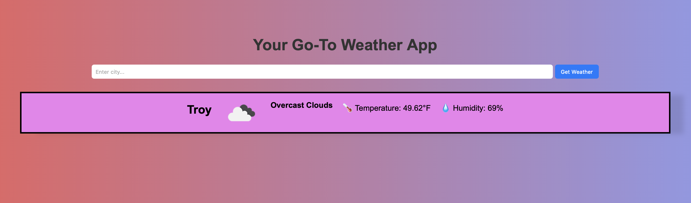

During my time at NSG, I worked as a part-time full-stack software developer intern, where I worked on multiple tickets, which are shown below.
Created an accordion using Bootstrap 5 to help office employees navigate their policies.
Using SQL, I was able to create an action task to change the status of a policy if it was under litigation. If the policy was under litigation, a warning notification would appear stating so.
As part of fixing bugs, I changed a text field that previously restricted access, allowing for quicker typing. This helped our home office employees complete their tasks faster.

This weather application features a Python backend and integrates a weather API to provide real time weather reports.
Computer Science 1&2
Foundations Computer Science
Data Structures
Concepts of Object Programming
Discrete Mathematics
Software Engineering
Analysis of Algorithms